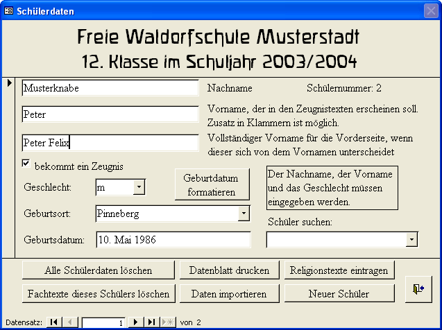

Texel-Hilfe

Einleitung
Beispiele
Überblick
Installation
Organisation
Einstellungen
Schülerdaten
Layout
Dateivorlagen
Schreiben
Einlesen
Korrigieren
Ausdrucken
Lückentexteditor
Kontakt
Eine Zeugnisverwaltung für Waldorfschulen
Hier werden die persönlichen Daten jedes Schülers eingegeben.

Angaben zum Schüler, Geburtsdatum formatieren
Löschen und Hinzufügen eines Schülers, Aktivierung
Navigation
Datenblatt ausdrucken
Daten importieren
Religionstexte eintragen
Angaben zum Schüler, Geburtsdatum formatieren
Die persönlichen Angaben zum Schüler werden einmal eingegeben und können in den nächsten Schuljahren wiederverwendet werden. Der vollständige Vorname erscheint nur auf der Vorderseite des Zeugnisses. Der Vorname wird in den Dateivorlagen für die Lehrer geschrieben und soll in den Fachtexten benutzt werden. Alle Lückentextfunktionen benutzten diesen Vornamen.
Sollten zwei Schüler wirklich einmal den gleichen Vor- und Nachnamen haben, kann hinter dem Vornamen in Klammern noch ein Zusatz angegeben werden, der zur Unterscheidung der beiden Schüler dient, natürlich aber nicht mit gedruckt wird.
Das Geschlecht muss eingegeben werden. Es wird aber nur für Lückentextfunktionen benötigt.
Der Geburtsort kann eingegeben, aber auch aus einer Liste ausgewählt werden. Zur Anpassung wählen sie die Schaltfläche Geburtsorte auf dem Formular Einstellungen anpassen.
Das Geburtsdatum kann zunächst nummerisch eingegeben werden. Die Schaltfläche Geburtsort formatieren bringt die Geburtdaten aller Schüler in ein ansprechendes Format.
Löschen und Hinzufügen eines Schülers, Aktivierung
Um einen Schüler aus der Datenbank unwiederruflich zu löschen, markieren Sie den Datensatz durch Anklicken des Anfassers am linken Rand des Formulars und drücken anschließend die Entfernen-Taste.
Schüler, die zum Beispiel wegen eines Auslandsaufenthaltes in einem Schuljahr kein Zeugnis erhalten sollen können dadurch deaktiviert werden, indem Sie das Häkchen bei dem Kontrollkästchen bekommt ein Zeugnis wegnehmen. Er wird dann bei der Erstellung der Dateivorlagen und beim Ausdrucken nicht berücksichtigt, kann aber im nächsten Schuljahr wieder aktiviert werden.
Einen neuen Schüler fügen Sie durch Drücken der Schaltfläche Neuer Schüler hinzu.
Navigation
Mit den Navigationsschalter am unteren Rand des Formulars können Sie die Schülerdaten durchblättern und den ersten und letzten Schüler auswählen. Hier sehen Sie auch die Gesamtzahl der Schüler in der Klasse. Die Schülernummer, die oben angezeigt wird, wird automatisch vergeben. Sie stimmt nicht unbedingt mit der Datensatznummer überein.
Einen bestimmten Schüler können Sie auch in der Auswahlliste Schüler suchen wählen.
Datenblatt ausdrucken
Nachdem die Daten eingegeben wurden oder ein neues Schuljahr begonnen wurde, können Sie ein Datenblatt mit den Daten dieses Formulars ausdrucken. Die Klassenlehrer oder -betreuer können dann die Liste prüfen, Schüler streichen, die die Schule verlassen haben, oder neue Schüler hinzufügen, die neu dazu gekommen sind.
Daten importieren
Sind die Schülerdaten schon in einer Access-Tabelle an Ihrer Schule vorhanden, besteht die Möglichkeit, einige Access-Kenntnisse vorausgesetzt, die Daten automatisch in die Zeugnisdatenbank zu importieren. Dazu importieren Sie unter Access die Tabelle und benennen Sie "Klasse 1 bis 12". Dann müssen Sie die Abfrage rqrKlassen so anpassen, dass die Daten gefunden werden. Um die Geschlechter und die Religionsgruppen richtig zuzuordnen, müssen Sie auch noch den Visual-Basic-Code des Formulars frmSchülernamen anpassen.
Religionstexte eintragen
Diese Funktion benötigen Sie nur, wenn die Schülerdaten aus einer anderen Tabelle importiert wurden. Es werden dann alle Religionstexte eingetragen, wenn die Religionsgruppe eingelesen wurde. Ansonsten machen Sie das für jeden Schüler in dem Datenblatt Letzte Zeugnisseite auf dem Formular Zeugnisse bearbeiten >.